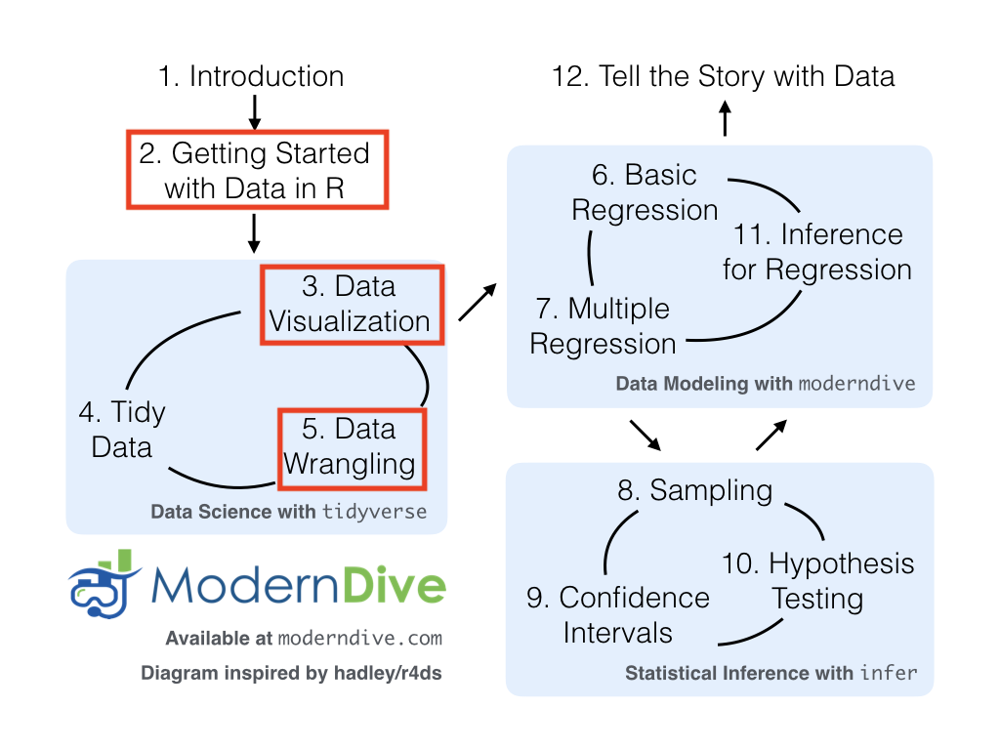
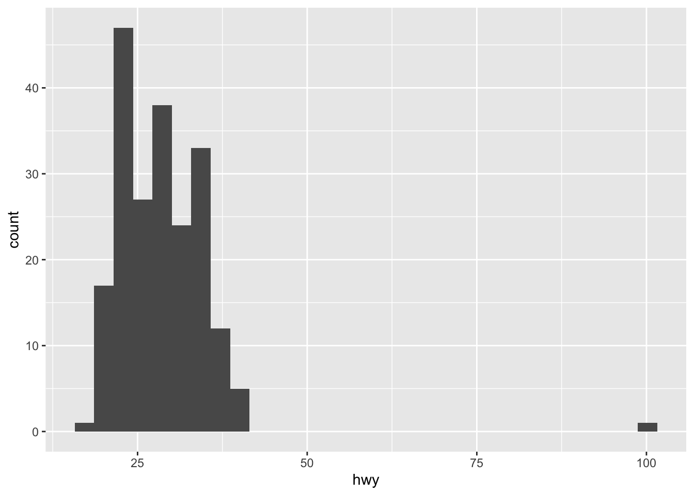
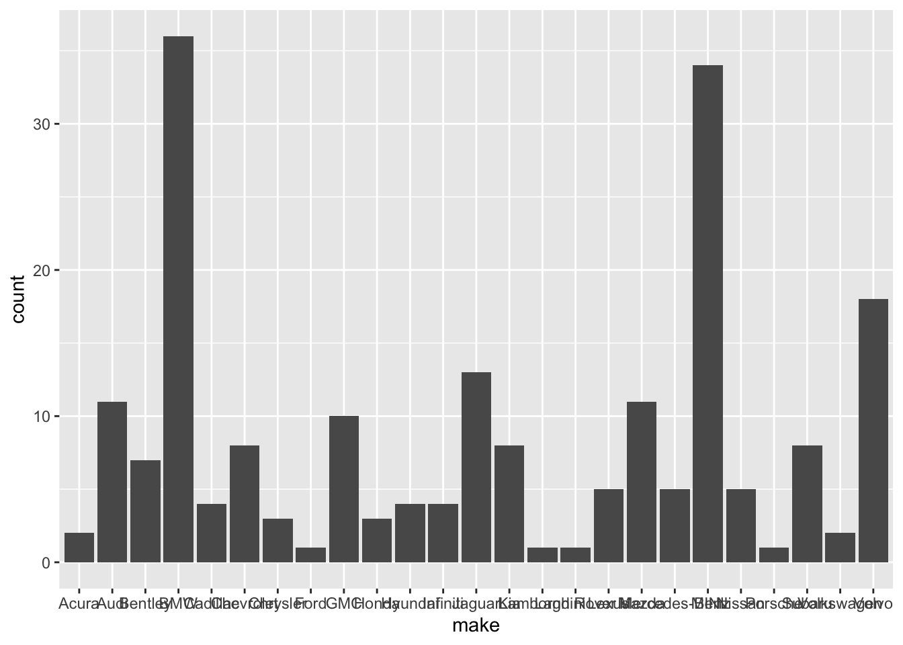
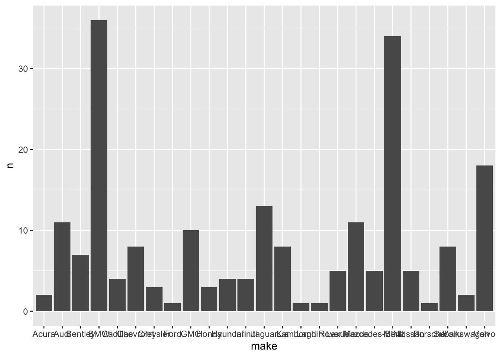
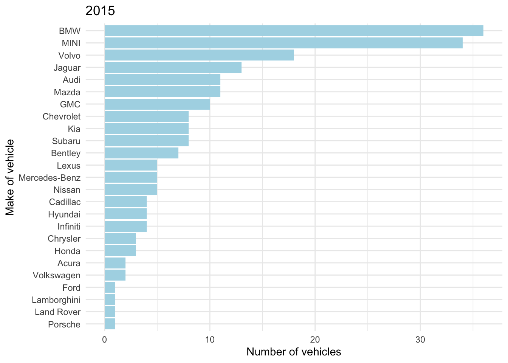
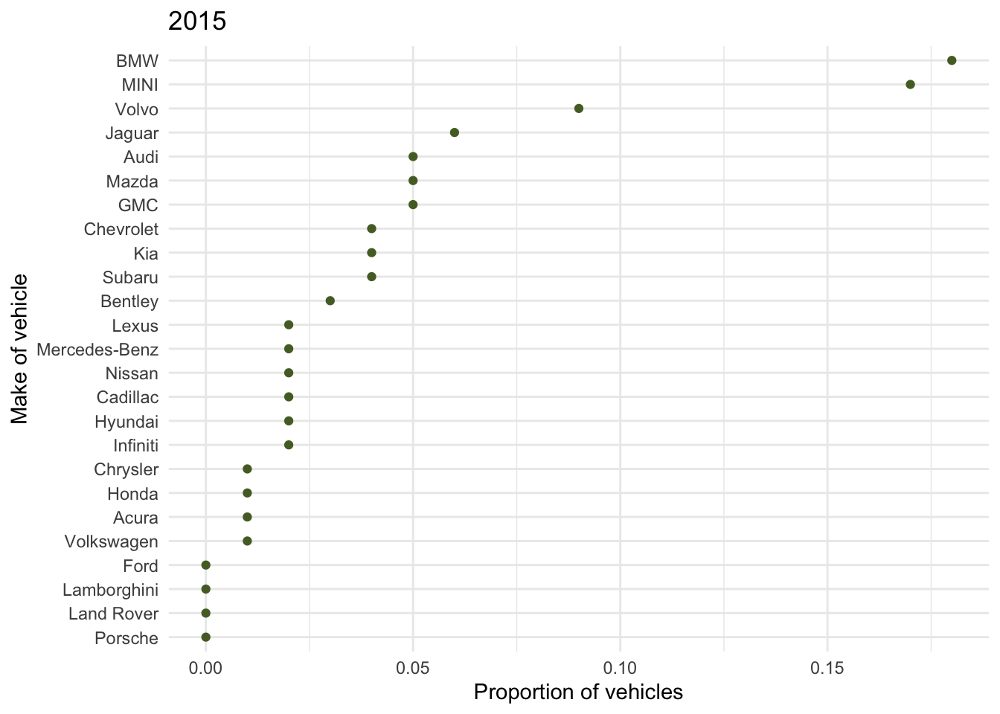

REMINDERS:
Statistics is the practice of using data from a sample to make inferences about some broader population of interest. This class focuses on using linear and logistic models built from a sample of data to learn about relationships in the broader population and to make predictions.
Set up R Studio (from R Basics)
Go to Tools –> Global Options. On the General tab, next to Save workspace to .RData on exit, choose Never and uncheck the box next to Restore .Rdata into workspace at startup. You can also go to the Appearance tab to customize the look of R Studio. Some people like black screens better than white.
Save this file to somewhere OTHER THAN YOUR DOWNLOADS FOLDER! Save often.
Install new libraries and load the libraries we will use
We need to install any new packages we plan to load in an R markdown document. Once installed, you won’t have to install them again. Today, we need to install the tidyverse and fueleconomy packages. You can either go to the Packages tab and click Install. Type tidyverse fueleconomy (separated by a space) and follow the prompts. Or else, in the console, type install.packages("tidyverse", "fueleconomy").
Then you load the libraries by running the following piece of code. You need to do this in every R markdown file where you use functions or datasets from these package. We will get into the habit of putting these at the very top of our documents. This will be one of the only documents where I do not have all the libraries listed at the top. Also note that I’ve added warning=FALSE, message=FALSE to the code chunk options, next to the r. This will prevent messages and warnings from being printed out.
library(tidyverse) #for plotting and summarizing
library(fueleconomy) #for the dataset
Intro to Graphing Data

GOAL:
Visually examine distributions of both quantitative and categorical variables. By the end of these notes and activities, you should have a general idea for how to do the following tasks.
- Create a histogram of a quantitative variable using a reasonable number of bins or binwidth so that the graph shows enough detail but not too much.
- Describe the shape, center, and spread of the distribution of a quantitative variable. Only one statistic should be use to describe each of the shape and spread, usually mean and standard deviation or median and IQR.
- Create a table to summarize how often each level of a categorical variable occurs. Sort the table from largest to smallest or smallest to largest.
- Create a barplot to visually show how often each level of a categorical variable occurs.
Usually one of the first things we want to do with new data is visualize it. If you haven’t wanted to do this in the past, you’ll want to do it now because it’s going to be so easy! We will use functions from a package called ggplot2 to create our visualizations. This package is based on a visualization framework called the “Grammar of Graphics”. We will only discuss a few key details of the framework: data, geometric objects, and aesthetic attributes. The main idea is that “A statistical graphic is a mapping of data variables to aesthetic attributes of geometric objects.”
- Data: Our data set that contains variables (the columns) with many observations (the rows).
- Geometric objects: What we observe on our plot - points, lines, bars, etc.
- Aesthetic attributes: parts of the geometric object that we observe: x/y position, color, shape, size, etc.
In general, a basic plot can be created using the following template, where everything between the <> would be modified to fit your needs.
ggplot(data = <DATA>) +
<GEOM_FUNCTION>(mapping = aes(<MAPPINGS>))
We could also write it like this:
<DATA> %>%
ggplot() +
<GEOM_FUNCTION>(mapping = aes(<MAPPINGS>))
NOTE: The %>% is called a pipe operator. It should be read, “and then.” It is used to “pipe” the object before it/on its left into the function after it/on its right. It makes for more readable code. In R Studio, the keyboard shortcuts to type the pipe are Ctrl+Shift+M on Windows and Cmd+Shift+M on Macs.
The ggplot2 cheatsheet is a good reference that I would encourage you to have open as we go through examples.
We will also be doing some basic data summaries using the dplyr package. Both dplyr and ggplot2 are part of the tidyverse package, which is a collection of packages that are useful in data visualization and manipulation. We already installed and loaded this package.
The data: We will use a subset of the vehicles data from the fueleconomy dataset throughout. These are fuel economy data from the EPA. Some variables have been excluded or modified from the original dataset. For more details search for vehicles in the Help section or run ?vehicles in the console. First, take a moment to explore that data and see what is there. Run the code below and then try to answer the questions below. Don’t worry about the code syntax.
vehicles_2015 <- vehicles %>% filter(year == 2015)
summary(vehicles_2015 %>% mutate_if(is.character, as.factor))
## id make model year
## Min. :34644 BMW :36 A8 L : 4 Min. :2015
## 1st Qu.:34705 MINI :34 6 : 3 1st Qu.:2015
## Median :34823 Volvo :18 CX-5 2WD : 3 Median :2015
## Mean :34801 Jaguar :13 Fit : 3 Mean :2015
## 3rd Qu.:34878 Audi :11 Forester AWD: 3 3rd Qu.:2015
## Max. :34932 Mazda :11 MX-5 : 3 Max. :2015
## (Other):82 (Other) :186
## class trans
## Compact Cars :40 Automatic (S8) :56
## Two Seaters :31 Automatic (S6) :47
## Large Cars :22 Manual 6-spd :31
## Subcompact Cars :21 Automatic 6-spd:25
## Small Sport Utility Vehicle 4WD:20 Auto(AM-S7) : 7
## Midsize Cars :18 Automatic 8-spd: 6
## (Other) :53 (Other) :33
## drive cyl displ
## 4-Wheel Drive :15 Min. : 4.000 Min. :1.200
## All-Wheel Drive :67 1st Qu.: 4.000 1st Qu.:2.000
## Front-Wheel Drive:61 Median : 6.000 Median :3.000
## Rear-Wheel Drive :62 Mean : 5.824 Mean :3.212
## 3rd Qu.: 8.000 3rd Qu.:4.400
## Max. :12.000 Max. :6.800
## NA's :1 NA's :1
## fuel hwy cty
## Diesel : 3 Min. : 18.0 Min. : 11.00
## Electricity : 1 1st Qu.: 24.0 1st Qu.: 16.00
## Gasoline or E85 : 13 Median : 28.0 Median : 20.00
## Premium :127 Mean : 28.6 Mean : 20.81
## Premium Gas or Electricity: 1 3rd Qu.: 32.0 3rd Qu.: 25.00
## Premium or E85 : 3 Max. :101.0 Max. :126.00
## Regular : 57
YOUR TURN!
Check out the basic features of the dataset:
- Examine the first six cases. (What are the cases?)
- How many cases and variables are there?
- What are the names of the variables?
- Open the dataset in a spreadsheet type viewer (type
View(vehicles_2015) in the console or click on it over in the Environment). Scroll through some of the data. Any questions about the data?
What about the quality of the dataset?
- How do you think the data are collected? Try doing some searching to learn more.
- Can you think of any complications?
Univariate visualization/summarization of quantitative variables
Research questions: What is the range of highway miles per gallon (hwy)? What are typical highway mpg? Are highway mpg’s variable across vehicles?
As you visualize quantitative variables, keep in mind:
- Center: Where is the center of the distribution? What is a typical value of the variable?
- Variability: How spread out are the values? A lot or a little?
- Shape: How are values distributed along the observed range? Is the distribution symmetric, right-skewed (tail is longer on the right, pulled further out to the right), left-skewed, bimodal, or uniform (flat)?
- Outliers: Are there any outliers, i.e. values that are unusually large/small relative to the bulk of other values?
- Context: In the context of your research, what do you learn from the plot or table? How would you describe your findings to a broad audience?
We will often talk about the distribution of a variable. This is the values the variables take and how often. You should incorporate the answers to the questions above in your description of a distribution. You should also use numerical summaries, which we’ll talk about shortly. Think about trying to describe the distribution to someone who doesn’t have the picture in front of them.
Histograms
Histograms are constructed by (1) dividing up the observed range of the variable into “bins” of equal width and (2) counting up the number of cases that fall into each bin. Try out the code below. Notice it’s telling you that it has chosen the number of bins for you: 30.
ggplot(data = vehicles_2015) +
geom_histogram(aes(x = hwy))
## `stat_bin()` using `bins = 30`. Pick better value with `binwidth`.

YOUR TURN!
Try changing the number of bins (fill in the number of bins below). Which number of bins seems “best”? Why?
ggplot(data = vehicles_2015) +
geom_histogram(aes(x = hwy), bins = ___)
We can customize plots in various ways, like I did below, but the most important part is creating a plot that allows us to see the distribution of our variable of interest, hwy in this case.
ggplot(data = vehicles_2015) +
geom_histogram(aes(x = hwy), bins = 25, fill = "lightblue") +
labs(x = "Highway MPG", y = "Number of vehicles") +
theme_minimal()

Notice: Things like bins, color, fill, etc. are outside of the aesthetic mapping. Remember that all the arguments inside the aesthetic map variables to aesthetics. Everything else happens outside of the aesthetic.
Density Plots
A density plot is essentially a smooth version of the histogram. Instead of sorting cases into discrete bins, the “density” of cases is calculated across the entire range of values. The greater the number of cases, the greater the density! The density is then scaled so that the area under the density curve always equals 1, and the area under any region of the curve represents the fraction of cases that lie in that range. Density plots can be especially helpful when working with very large datasets (at least 10,000 observations).
YOUR TURN!
Run and modify the following code to look at the distribution of highway mpg for All-Wheel Drive and Front-Wheel Drive vehicles. What would you remark about the differences between the two? (Think back to center, variability, shape, outliers, and scientific context.) Is it easy to make these comparisons?
vehicles_2015 %>%
filter(drive == "All-Wheel Drive") %>%
ggplot(aes(x=hwy)) +
geom_density(fill = "orange")
acs12 %>%
filter(____________) %>%
ggplot(aes(x=hwy)) +
geom_density()
Measures of Center and Spread
Numerical measures of the center and spread can help us better understand the distribution of a quantitative variable. Try the following code to compute the mean, median, standard deviation (SD), and IQR of hwy. The IQR is the interquartile range, the difference between the 3rd quartile (aka 75th percentile, Q3) and 1st quartile. With these additional statistics, how would you describe the distribution of hwy?
vehicles_2015 %>%
summarize(
mean_hwy = mean(hwy),
median_hwy = median(hwy),
sd_hwy = sd(hwy),
IQR_hwy = IQR(hwy)
)
YOUR TURN!
In general, we either use the mean and standard deviation or median and IQR to describe the shape and spread of a distribution. When would you use each and why?
Create a graph to show the distribution of displ and use words and statistics to describe the distribution.
Try examining the distribution of hwy for the entire vehicles dataset. Be sure to use a reasonable number of bins. Describe the distribution using words and statistics.
Univariate visualization/summarization of categorical variables
Research Question: How many 2015 vehicles are Fords?
As you visualize categorical variables, keep in mind:
- Variability: Are cases evenly spread out among the categories or are some categories more common than others?
- Context: In the context of your research, what do you learn from the plot or table? How would you describe your findings to a broad audience?
Tables
Use the table below to help answer your question:
vehicles_2015 %>%
count(make)
Look at the next two tables. How do they differ? Can you figure out what the code is doing?
vehicles_2015 %>%
count(make) %>%
mutate(prop = n/sum(n))
vehicles_2015 %>%
count(make) %>%
mutate(prop = n/sum(n)) %>%
arrange(desc(n))
Barplots
Barplots are a good way to visualize the distribution of a categorical variable Try out the code below. This shows two different ways you can create the same barplot.
In the first set of code that uses geom_bar, the function computes the counts for you. You only have to give it an x aesthetic. In the second set of code that uses geom_col, you have to compute the counts (or percentages or whatever you want to be on the x-axis) first and use that as your y aesthetic. This is a good option if you have an already summarized dataset.
vehicles_2015 %>%
ggplot(aes(x = make)) +
geom_bar()

vehicles_2015 %>%
count(make) %>%
mutate(prop = n/sum(n)) %>%
ggplot(aes(x = make, y = n)) +
geom_col()

YOUR TURN!
- What are some pros and cons about the graph I created above? How might you fix some of the cons?
- Try modifying the code from above to put the proportion,
prop, on the y-axis of the barplot rather than the count.
As with histograms, you can make many modifications to barplots. I have illustrated some of them in the plots below.
#Plot 1
vehicles_2015 %>%
mutate(make_ordered = fct_infreq(make)) %>% #creates a new variable that is the same as the `make` variable but is in frequency order
ggplot(aes(x = fct_rev(make_ordered))) + #reverse the order so largest is first
geom_bar(fill = "lightblue") +
coord_flip() +
labs(x = "Make of vehicle",
y = "Number of vehicles",
title = "2015") +
theme_minimal()

#Plot 2
vehicles_2015 %>%
mutate(make_ordered = fct_infreq(make)) %>%
count(make_ordered) %>%
mutate(prop = n/sum(n)) %>%
ggplot(aes(x = fct_rev(make_ordered), y = round(prop,2))) + #`round()` will round the number to the specified number of decimal places - 2 in this case
geom_point(color = "darkolivegreen") +
coord_flip() +
labs(x = "Make of vehicle",
y = "Proportion of vehicles",
title = "2015") +
theme_minimal()

A few suggestions when you create barplots:
- If there is no natural ordering, display by frequency. The default ordering in R is alphabetical.
- When there are many categories, flip the coordinates. It is easier to make comparisons and easier to read categories with long names. I actually prefer this when there are only a few categories.
- Provide useful labels! This is a good thing to do with any type of plot.
- Plotting dots rather than bars is a good idea if you do not want to start at 0. For example, if you are plotting averages for different categories.
YOUR TURN!
Choose another categorical variable and create a barplot. If you are looking for colors, here is one resource to find some options. R often picks a good default for you. I encourage you to stay away from colors that are distracting to the eye. Summarize your findings in a contextually meaningful way.
Make a barplot using a categorical variable from the larger, vehicles, dataset. Summarize your findings in a contextually meaningful way.
Pick a new quantitative variable from the data set.
- Construct a histogram. Play around with the bin width, color, etc.
- Construct a density plot. Play around with the color.
- Challenge: Do a Google search and try to figure out how to add transparency to the density plot.
- Describe the shape, center, and spread of the distribution. You should use one statistic for each of the center and spread. Any other interesting features? Summarize your findings in 1-2 short sentences.
